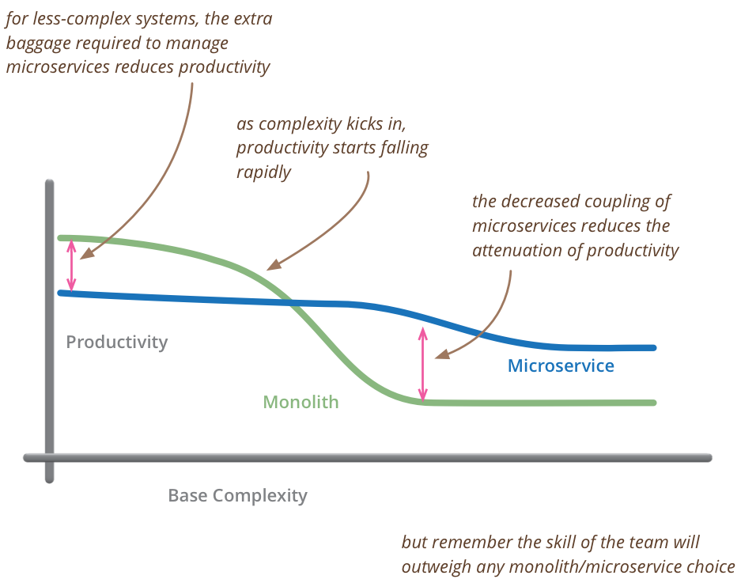
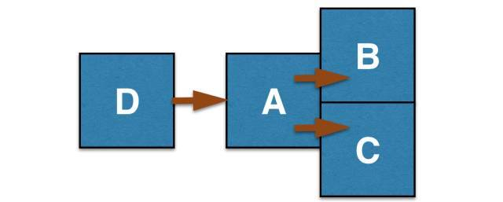
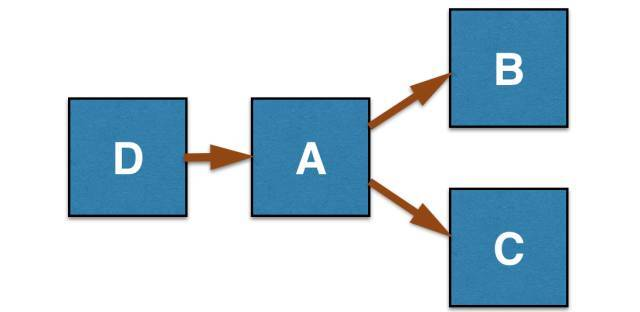

- 00 开篇词 从工程师到管理者，我的思考与实践.md.html
- 01 职场分身术：从给答案到做引导.md.html
- 02 Bug引发事故，该不该追究责任？.md.html
- 03 每个工程师都应该了解的：A_B测试.md.html
- 04 如何帮助团队成员成长.md.html
- 05 当我们给别人提意见时，要注意些什么？.md.html
- 06 每个工程师都应该了解的：聊聊幂等.md.html
- 07 当别人给我们提意见时，该如何应对？.md.html
- 08 说说硅谷公司中的一对一沟通.md.html
- 09 每个工程师都应该了解的：大数据时代的算法.md.html
- 10 项目延期了，作为负责人该怎么办？.md.html
- 11 管理和被管理：期望值差异.md.html
- 12 每个工程师都应该了解的：数据库知识.md.html
- 13 管理者在进行工作分配时，会考虑哪些问题？.md.html
- 14 硅谷人到底忙不忙？.md.html
- 15 每个工程师都应该了解的：系统拆分.md.html
- 16 技术人如何建立个人影响力_.md.html
- 17 管理者不用亲力亲为：关键是什么？.md.html
- 18 每个工程师都应该了解的：API 的设计和实现.md.html
- 19 硅谷面试：那些你应该知道的事儿.md.html
- 20 项目管理中的三个技巧.md.html
- 21 每个工程师都应该了解的：中美在支付技术和大环境下的差异.md.html
- 22 不要做微观的管理者.md.html
- 23 如何处理工作中的人际关系？.md.html
- 24 编程语言漫谈.md.html
- 25 兼容并包的领导方式.md.html
- 26 如何做自己的职场规划？.md.html
- 27 小议Java语言.md.html
- 28 如何激发团队人员的责任心.md.html
- 29 说说硅谷互联网公司的开发流程.md.html
- 30 编程马拉松.md.html
- 31 工程师、产品经理、数据工程师是如何一起工作的？.md.html
- 32 硅谷人如何做 Code Review.md.html
- 33 技术人的犯错成本.md.html
- 34 如何从错误中成长？.md.html
- 35 理解并建立自己的工作弹性.md.html
- 36 如何对更多的工作说“不”.md.html
- 尾声：成长不是顿悟，而是练习.md.html
- 捐赠
15 每个工程师都应该了解的：系统拆分
四年前，我加入了风头正劲的 Square 公司。两年前，我又加入了涨势甚猛的 Airbnb 公司。在我加入的时候，这两个公司都有上百名的工程师，网站和主要产品的核心功能也已齐备。
两家创业公司从 0 到 1 的创业过程我并没有亲身经历，但是两次都恰好经历了公司从 1 到 N 的扩张过程和业务拆分的过程。
今天我就和你聊聊，公司从 1 到 N 发展过程中的系统拆分问题。
创业初期的代码现状
在 Square 刚刚起步的时侯，整个产品都是基于 Ruby on Rails 构建的，所有的产品和功能代码几乎都在一个代码库里。
等到我进入 Square 的时候，有一些服务已经从 Ruby 代码中分离出来了，形成了单独的 Java 或者 Ruby 服务，然而大部分功能还是在一大块 Ruby 代码里。
当时，几乎所有的工程师每天都在这一份基准代码（Code Base）里写程序。虽然有严格的代码审核过程和规范的开发流程，但是，不同功能的代码模块会产生交叉影响，不同工程师改动的模块会有重合或牵连，所以，系统还是会时不时出现问题。
那时候， Square 的做法是：在周五对本周所有的代码进行代码审查（Code Review），通过审查之后，把修改合并到主分支，然后再发布到生产环境。
这种做法虽然可以避免产生人为错误，但是非常不灵活，比如，每周只有周五有一次机会将改进的代码部署到线上。
可以想象一下，一百多名工程师，就算只有三分之一的人在这个代码池子里改代码，一周累积下来，已经有不少的改动了。
于是，当时 Square 有个系统管理员组（Sysops），专门负责每周五的部署。我也是工作近半年的时侯，因为表现不错才被荣幸地 “选拔” 进了这个 “特别行动小组”，承担部署的重任。
那么说，每次的部署是一幅什么样的场景呢？
部署开始的时候，一正一副两位工程师正襟危坐，多个显示器同时打开，进行各种指标监控。
工程师先将在测试环境中测试无误的代码部署到若干生产机器上，进行灰度发布，这就意味着有一部分用户的访问量会调用新代码。如果监控没有发现异常的话，再进行全量发布，这周修改的代码就会被部署到几百台机器上。
一旦出现异常，监控系统就开始各种红色告警，工程师们会立刻扔下手中的可乐或者咖啡，进入备战状态，停止系统，进行数据回滚、排查问题、修复，从头开始把流程再来一遍，直到代码安全地部署到线上并能够正常运行为止。
随后的两年，我们进行了细致的业务拆分，等到我离开 Square 的时候，大部分可以独立出来的服务都已经拆分出来，很多系统可以分别部署和上线，也就再没有了那种激动人心的周五上线日。
Airbnb 的情况也差不多，我刚加入的时候，代码状态甚至更原始一些。不同的是，Airbnb 没有一周只能部署一次代码的规矩，所有的工程师只要准备好了就可以做部署上线。
这样做的优点是可以快速迭代，每次部署的代码改动也很小，缺点是几乎任何时候都有人在部署代码。时时的部署也就意味着，红色告警随时可能在身边响起。
为什么系统需要进行业务拆分
为什么会出现这种情况呢？我在文稿中给大家放了一张图，图例很好地阐述了效率和复杂度的关系。

图的 X 轴代表了基本复杂度（Base Complexity），Y 轴代表了生产效率。我们可以看出，当一个公司规模很小的时候，基本复杂度相对较小，所以单一代码库（Monolith）的效率就会高。
然而，随着公司业务的扩展，访问量的增加，其基本复杂度就会逐步升高，达到某一个临界点后，微服务（Microservice）的效率就远远高于单一代码库。关于微服务，这里就不做详述了，极客时间会发布专门的微服务知识产品。
为了解决效率和复杂度的问题，无论是在 Square 还是 Airbnb，我都有一大部分时间花在了业务拆分上。下面，我就和你聊聊这几年做业务拆分的一些心得和踩过的坑。
业务拆分并不像看起来那么简单
我们从一个例子谈起，比如你有一个功能模块，大概可以分成四部分。其中模块 A 连接一个外部模块 D，A 输出的结果，会被模块 B 和 模块 C 分别调用。

针对这样的模块，我们可以做一个集成测试（Integration Test），在模拟（mock）D 的情况下，测试 A、B、C 是不是可以正确运行。
如果有人修改了模块 A 的返回值，但忘了修改模块 B 和 C 的接口，测试就会立刻失败，不会存在因为忘了修改接口而测试通过的可能。一旦通过了集成测试，所有的改动会在一次部署中同时展现（Rollout） 或者回滚（Rollback），非常容易控制。

随着业务的发展，A、B、C 三个功能被拆分成三个独立的服务（Service），各自保存在不同的代码库，或者是同一个代码库不同的服务容器（Service Container）里。
这样的话，测试用例就不能综合测试这三部分的功能了，只能模拟相互的请求（Request）或响应（Response），如果在开发环境下联调测试，则需要本地建立这三个服务。
根据每个公司开发环境的成熟度，这一步可能很简单，也可能耗掉你几个小时，才能让不同服务在本地正常运行，并且需要通过 RPC 相互调用。
RPC 就是远程过程调用的意思。有远程调用，就会用到本地桩和过程调用，这涉及了本地多服务的配置，过程繁复，不小心就会引入错误，测试成本也会随之增加。
如果程序员在改动的时候并没有按照正常流程进行测试，尤其是一些 “很小的” 或者 “不相干的” 改动，一旦部署上线，系统就可能出现各种各样的问题。
就算一切顺利，有一天，A 修改了自己的接口，RPC 调用中请求的一个字段（Field）从 integer 变成 string 类型。
如果 A、B、C 还在一起的时候，我们在代码库里把三者的相应类型都改了就好；但是，现在 A、B、C 都是独立的服务，可以独立地部署，这事就有点麻烦了，我们很难保证 A、B、C 的部署总是完全同步。
有经验的读者知道，我们为接口做个向后兼容（Backward Compatibility）就好了，只要：
- 先改 A 的接口，让它接受 integer 也接受 string，如果请求是 integer，先做一下转换，然后发布这个改动；
- 修改 B 和 C 的接口，响应从 integer 变成 string 类型，发布这个改动；
- 等到 A、B、C 的新代码都稳定了，再修改 A 的接口，只接受 string 类型的参数，发布这个变化，我们就完成了所有接口的改动。
这样就没问题了么？并没有这么简单。
因为 A 还有其他代码，所以在上面的第二步之后，你有可能发现 A 的代码有一个问题，需要将线上的代码回滚到之前的某个版本。这时候 B 和 C 的接口已经是 string 类型了，而 A 只接受 integer，然后，线上就是频繁请求报错。
当然，这里举的是一个简单的例子，我们可以通过延长第一步的兼容时间来避免出现类似问题，但是，实际工作中的改动不会是这么简单的依赖关系，或者没有约束关系，所以，服务之间无缝修改接口，是一个需要非常小心的问题。
业务拆分时的注意事项
系统拆分后的痛远远不止于此。就我自己的经历，大概有下面的这些感受。
测试会变得异常复杂
因为模块被独立出来之后，并没有办法很方便地写出集成测试用例。一个做法是模拟出所有接口的请求和响应，但实际上大部分时候根本没法测试跨服务的改动，这种做法多少有点自欺欺人的味道。
另一个方法就是在本地配置好所有的服务，用真实的服务响应来测试。但是撇开本地设置多服务的复杂度，保证本地服务一直是最新代码，同样也是一件麻烦的事。
尤其是同步开发的工程师变多以后，可能你正在测的服务没有问题，但是在你做测试的同时，已经有同事对你刚刚测试的服务做改动推送到了主分支上。
测试的复杂度，几乎是软件工程中的万恶之源。当每个小改动都让测试变得耗时耗力时，就难保没有偷工减料的员工，大家揣着 “我的改动应该没问题” 的侥幸心理，不去做完整测试，就把自己的代码合并进主分支。
尤其是大部分这么做的改动都没有问题，时间一长，侥幸心理一再滋长，人们直接合并代码的胆子也越来越大，终于有一天会把生产系统彻底搞挂。
针对这个问题，我和在 Google 工作的朋友交流过。Google 或者 Facebook 这样的大公司里，整个系统做得相当成熟，测试环境做得非常完美。
每个服务都对应设置了在线的测试服务，写集成测试极其方便，或者把服务做成开箱即用，工程师可以一次性地建立所有的本地服务进行联调和测试，但是，对于大部分创业公司来说，很难达到这个水准。
与接口相关的改动需要大量协调
这一点也很容易理解。比如我们要把一部分代码从一个服务迁移到另一个服务，或者修改 API 的协议，那么，所有不同服务的维护者都需要在代码里增加向前或者向后的兼容性，对代码进行保护。
同时代码的上线顺序和修改顺序也息息相关，我们需要做一张检查列表（Checklist），考虑各种可能性，精确地按照顺序执行。一旦发生代码回滚，可能又要重来一遍。
这个过程就会涉及方方面面的人、事和代码修改，过程十分繁复。
报错的处理
因为程序不在一起了，当异常发生的时候，我们就得不到完整的异常堆栈信息（Exception Stack），只能追踪到某个服务的接口处，于是 Debug 变得很难。你还需要去另一个服务的日志里去找，看看那个时间点从你这里发出去的请求到底发生了些什么事，然后才能进一步定位问题。
好的程序员在写服务的时候知道要把异常信息封装后层层传播出去，并最终暴露到接口的 4XX 响应里，这样，调用方就可以在堆栈信息里看到具体的出错信息。
如果有的程序员没有这么做，就很容易出现 “无语问苍天” 的感觉，比如你线上的服务出了问题，到日志系统 Kibana 里一看，只有下面这行错误信息，你是不是会很崩溃？
Error! HTTP 400 response from- http://another-microservice.com/update
日志的完整性
系统拆分了，日志系统也会分离，不仅系统调试变得困难，一些基于日志产生的事件流（Event Stream）机制，也会变得难以处理。这意味着，想要真正从日志里获取完整有用的信息，就需要将不同服务的日志一起取出来进行分析和处理。
这种需求并不是所有的应用都需要，因为我们是做支付的，经常需要一个事务的完整审计线索（Audit trail），也就是一条告诉我们 “每个相关的变化是谁做的，什么时候做的（who did what and when for every change involved）” 的特殊日志。
这件事以前处理起来非常复杂，现在倒是有了比较标准的解决方案，就是一个共享的消息总线（Message Bus），比如 Kafka，有了日志就分门别类的扔到消息总线里处理，然后再进行分析。
超时设置
为了保证用户体验，我们常常在系统里做一些超时设置（Timeout），比如一个请求从终端设备发过来，我们希望用户最多等待 5 秒，超过 5 秒就会放弃请求并返回相应的结果通知用户。系统拆分之后，我们可以做一个全局的超时设置，让所有的服务都使用这个全局变量。
这一切看起来很美好，但稍不注意就会出现这样那样的问题。由于服务都是独立开发的，如果某一个服务的实现没有使用 5 秒的全局变量，我们就不知道这个服务到底超时多久才会返回结果，或者是否有超时的设置。
另外，根据某些服务的性质不同，我们希望尽可能地给出最合理的延时设置。还有些请求会经历多次跨服务的调用，一旦同时出现超时，就会进行叠加，超时设置就完全不可控了。
为了避免这些情况出现，就需要增加流程和规范，并且在进行系统拆分的时候进行宏观的设计和考虑。系统拆分会为我们带来灵活性，同样也会增加其他成本。
关于代码自由
记得以前看到过一句话，当每个人都有绝对自由的时候，这个世界就没有自由可言了。拆分之后每个服务的实现都可以自主选择自己的语言，自己的数据存储方式，自己的代码风格。
短期来说，这种做法可以让程序员的效率极大地提高，但是在同一个公司里，当各种各样的服务变成一场技术秀的时候，不论是维护还是稳定性都会受到极大的挑战。于是，这时便会有人扮演清道夫的角色，开始搞服务的标准化。
另外，独立服务的开发周期相对较短，往往一两个工程师几周时间就可以写出一个新的服务，这样系统里会出现数不清的服务，有的服务由于人员离职等原因没人维护了，有的服务被重写了，有的服务要退休了，为了管理这些服务，我们还需要一个服务编排和管理系统。
系统拆分之路漫漫，吾等将上下而求索。
如何去判断系统是不是到了必须进行拆分和服务化的临界点
写到这里可能有读者会问，这篇文章中你介绍了大代码库的弊端，也写了很多系统拆分和服务化需要注意的问题，那么，你到底想告诉我什么呢？
做为一个亲身经历过两种架构的工程师，我想说的是：系统拆分并不是做一道单选题，在进行系统拆分和服务化之前，我们需要综合考虑各种因素，找到平衡点。
你的业务量是否足够大，逻辑是否足够复杂以至于必须进行系统拆分。水平扩展是不是已经不起作用了？代码的相互影响、部署时间过长真的是系统的切肤之痛么？如果答案都是肯定的，那么你就应该进行系统拆分了。
对于服务化的架构，你的开发人员多少经验，能否正确驾驭而不是让本文中提到的问题成为拦路虎么？
系统拆分是一个“从一到多容易，从多到一困难”的过程，这个过程几乎是不可逆的。一旦你三分天下，想再一统江山就没那么容易了。所以在做拆分计划的时候，一定要慎之又慎。
系统拆分是一个实践性很强的工作，并无一定之规，只有亲自参与了这个过程，才会有更深入的体会；在这个过程中，你的架构能力也会产生一个质的跃迁。
文章的最后，我来总结一下今天分享的内容。
今天的文章较长，涉及的内容也比较多：
第一点，我谈到了创业公司初期，代码的构建状况以及遇到的相关问题；
第二点，我解释了为什么随着业务的发展，我们会进行系统拆分；
第三点，我提醒了业务拆分并不像看起来那么简单，我们需要时刻去注意细节；
第四点，我分析了在进行系统拆分和服务化的过程中，需要注意哪些问题；
第五点，我讲解了如何去判断一个系统是不是到了必须进行拆分和服务化的临界点。
希望这些内容对走在创业路上的技术人有所帮助。
你有系统拆分的经验和故事么，可以在留言中告诉我，我们一起讨论，也欢迎你把这篇文章转发给你工作中的伙伴，我们一起成长。再见。
© 2019 - 2023 Liangliang Lee. Powered by gin and hexo-theme-book.